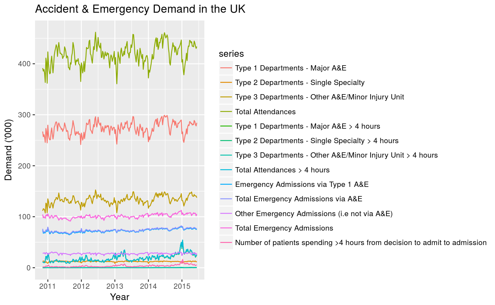

Weekly demand of Accident & Emergency departments in the UK, from 7 November 2010 to 7 June 2015.
AEdemand
An object of class ts.
library(ggplot2) autoplot(AEdemand, xlab="Year", ylab="Demand ('000)") + ggtitle("Accident & Emergency Demand in the UK")# NOT RUN { # Demonstration of the adjustment of all temporal aggregates # using Total Emergency Admissions total <- AEdemand[,12] totalagg <- tsaggregates(total) plot(totalagg, main="Total Emergency Admissions") # Base forecasts base <- list() for(i in 1:5) base[[i]] <- forecast(auto.arima(totalagg[[i]])) base[[6]] <- forecast(auto.arima(totalagg[[6]]), h=2) # Reconciled forecasts reconciled <- reconcilethief(base) main <- paste(names(totalagg)," (k=", 52/unlist(lapply(reconciled,frequency)),")",sep="") par(mfrow=c(2,3)) for(i in 6:1) { ylim <- range(base[[i]]$mean, base[[i]]$x, reconciled[[i]]$mean) plot(base[[i]], main=main[i], fcol='white', plot.conf=FALSE, ylim=ylim, xlim=c(2010.5,2017.5)) polygon(c(2015.45, 2020, 2020, 2015.45), c(0, 0, 1e5, 1e5), col='grey', border=FALSE) lines(base[[i]]$mean, col='red', lty=2) lines(reconciled[[i]]$mean, col='blue') } # }